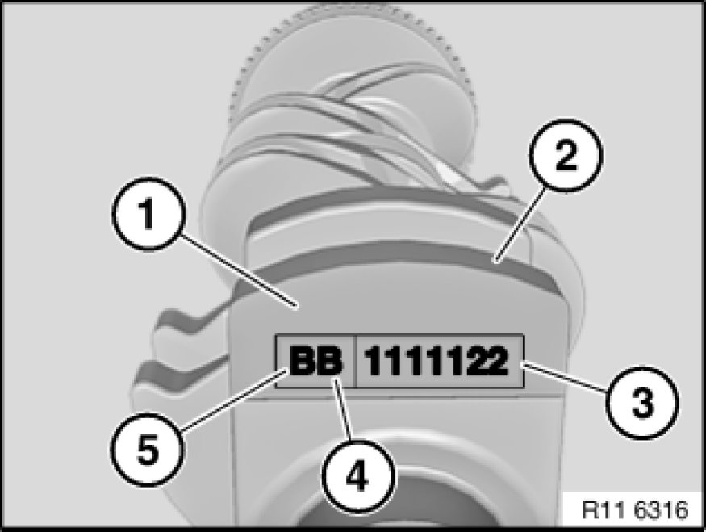
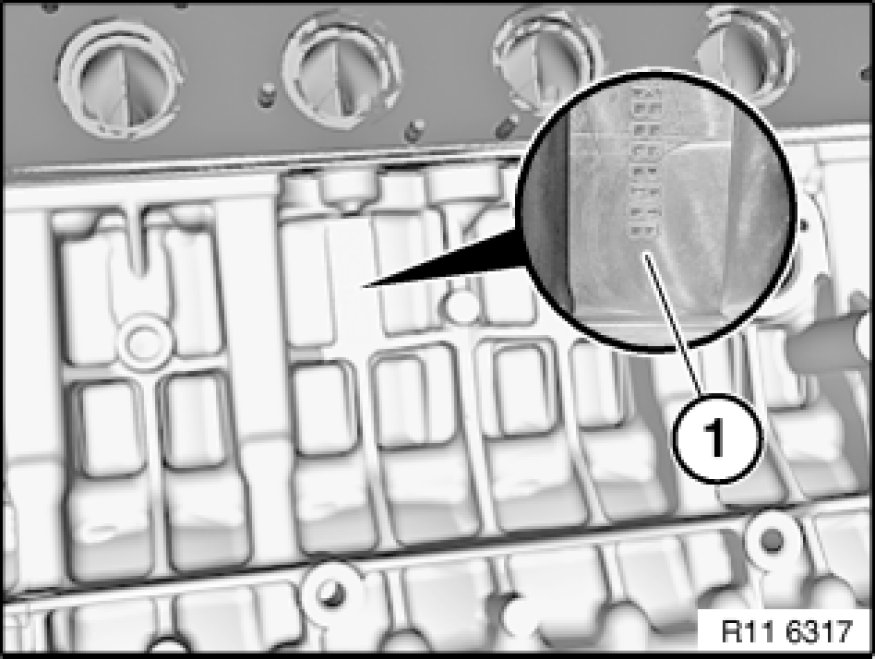
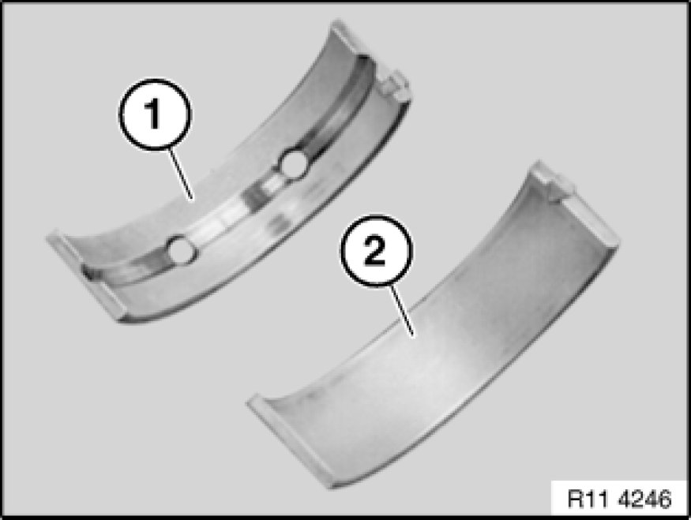

Crankshaft Main Bearing: Specifications
11 11 1AZ Bedplate to crankcase hexagon screws (N52K)
(14 x) M10 X 100 Replace screws
Jointing torque 20 Nm
Torque angle 70°
11 11 2AZ Bedplate to crankcase ASA screws (N52K)
(25 x) M10 X 27 Replace screws
Jointing torque 15 Nm
Torque angle 90°
11 11 3AZ Bedplate to crankcase ASA screws (N52K)
(4 x) M8 X 37 Replace screws
Jointing torque 8 Nm
Torque angle 90°
11 11 4AZ Bedplate to crankcase ASA screws (N52K)
(2 x) M10 X 41 Replace screws
Jointing torque 15 Nm
Torque angle 90°
11 21 531 - Main crankshaft bearing shells (N52K)
Allocation of bearing points:
Bearing point 1 is at the front on the timing chain drive in the direction of travel.

Surface (1) for identification on crankshaft web 1.
Seven-digit part number (2).
Main bearing classification (3) for crankcase lower half (bedplate), code numbers 1 2 3, see table.
Code letters (4 and 5) are exclusively required for a machined crankshaft.
Code letter (4) as per table, main bearing.
B= build date 1 (B 1 2 3 -0.25 mm).
B= build date 2 (C 1 2 3 -0.50 mm).
Code letter (5) as per table, lift bearing.
B= construction stage 1 (-0.25mm).
C = construction stage 2 (-0.50 mm)

Main bearing classification (1) in crankcase, code letters A / B or C, see table.
The letter / number combination produces a bearing shell pairing.
Identification by different colors.
First bearing point is on the timing drive.
The color combination Yellow and Red must not be fitted.

Code letters on crankcase
Code letter A = bearing shell (1) color Yellow.
Code letter B = bearing shell (1) color Green.
Code letter C = bearing shell (1) color Red.
Code numbers on crankshaft
Code number 1 = bearing shell (2) Yellow.
Code number 2 = bearing shell (2) Green.
Code number 3 = bearing shell (2) Red.
The color combination Yellow and Red must not be fitted; the bearing colors Green / Green must be selected for this color combination, see table.
Installation example
For bearing 1 with code letter A on the crankcase and code number 1 on the crankshaft bearing shell (1) with the color Yellow is required for the crankcase and bearing shell (2) with the color Yellow for the crankcase lower half (bedplate).
Bearing 2: - A and 2 colors Yellow and Green.
Bearing 3: - B and 2 colors Green and Green.
Bearing 4: - C and 2 colors Red and Green.
Bearing 5: - B and 1 colors Green and Yellow.
Bearing 6: - C and 3 colors Red and Red.
Bearing 7: - C and 1 colors Green and Green.
The color combination Yellow and Red must not be fitted.